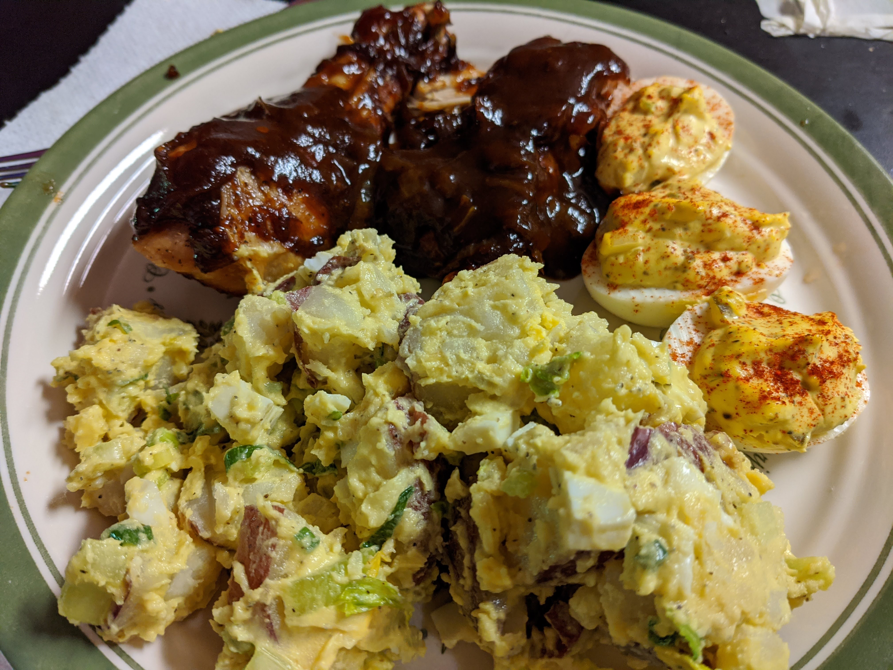

Potato Salad

A Mustard Potato Salad Recipe
There are about as many potato salad recipes as there are women in the South. Though I was reared in the south, I was brought up by a North Dakotan. Maybe that explains the big chunks of potato and celery and the copious amounts of mustard. Either way, its my favorite, and the favorite of many who have had the chance to try it. Enjoy!
Ingredients:
- Potatoes, 5 lb (literally use whatever, but my fave is red potatoes with the skin on) cut up, boiled til fork tender, and drained.
- Mayonnaise
- Yellow mustard (FRENCH'S!)
- 1 or 2 T White vinegar
- 1 onion, chopped
- Celery, chopped (remove outer 6 or 7 ribs and use the rest for this recipe, including leaves).
- salt & pepper to taste
Steps:
- In a medium bowl, stir together Mayo, mustard, vinegar, salt & pepper.
- Add onion and celery to mixture, stir.
- In large bowl full of drained and cooled potatoes, pour mixture and fold to coat throughout.
- Refrigerate til ready to serve.